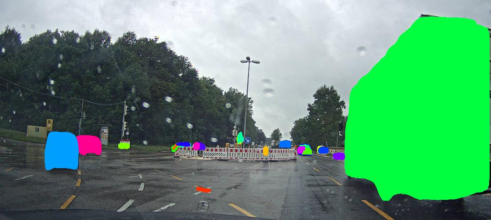
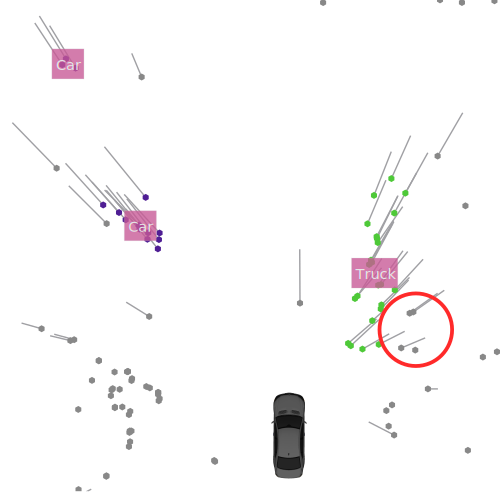

General
Data annotation for automotive radar point clouds is an extremely tedious task. It requires human experts with a lot of experience to accurately identify all radar points which correspond to the objects of interest.
In this data set, only moving objects were annotated. That is, the static environment (trees, poles, curbstones, houses, …) is ignored and also potentially moving objects (parked cars, standing pedestrians) are not annotated.
To ensure high quality annotations, only manually labeled data created by human experts is used.
The 11 Object Classes
Eleven different object classes are labeled: car, large vehicle, truck, bus, train, bicycle, motorized two-wheeler, pedestrian, pedestrian group, animal, and other.
The pedestrian group label is assigned where no certain separation of individual pedestrians can be made.
The other class consists of various other road users that do not fit well in any of these categories, e.g., skaters or moving pushcarts.
In addition to the eleven object classes, a static label is assigned to all remaining points.
All labels were chosen in a way to minimize disagreements between different experts’ assessment, e.g., a large pickup van may have been characterized as car or truck if no large vehicle label had been present.
The 5 Simplified Classes
In addition to the regular 11 classes, a mapping function is provided along with the data set tools which project the majority of classes to a more coarse variant containing only: car, large vehicle, two-wheeler, pedestrian, and pedestrian group.
This alternative class definition can be utilized for tasks, where a more balanced label distribution is required - for example during the training of a neural network.
For this mapping, the animal and the other class are not reassigned.
Instead they may be used, e.g., for a hidden class detection task.
The Labeling Process
Two labels are assigned to each individual detection of a
dynamic object: a label id and a track id.
The label id is an integer describing the semantic class the respective object belongs to.
On the other hand, the track id identifies single real world objects uniquely over the whole recording time.
That is, all detections of the same object have the same track id.
If an object was occluded for more than 500 ms or if the movement stopped for this period of time (e.g. if a car stopped at a red light), then a new track id is assigned as soon as detections of the moving object are measured again.
The labelers were instructed to label the objects in such a way that realistic and consistent object proportions are maintained.
Since automotive radar sensors have a rather low accuracy in the azimuth direction, especially in greater distances the contour of objects is not captured accurately.
For example, deviations in the azimuth direction can cause that an object in front of the ego-vehicle appears much wider than it actually is.
In this case, detections with a non-zero Doppler velocity are reported at positions which are unrealistically far away from the true object’s position. These detections are then not added to the object. This can be seen in the following image, where the encircled detections are not added to the truck cluster, even though they have a non-zero Doppler velocity:
 
An object’s true dimensions were estimated by the labelers over the whole time during which detections from the object were measured. This approach causes that at first sight the labeling results seem wrong, since detections with non-zero Doppler close to a moving object are not marked as members of this object. However, this visual impression is in most cases misleading and great care was taken that object dimensions are consistent over time. This choice has the great upside that realistic object extents can be estimated by object detection algorithms.
When looking at detections from multiple sensor scans, one should be careful with the reasoning about whether a detections belongs to an object or not. Due to the movement of the object, its detections are spread out in an earth-fixed coordinate system. Hence, the length of an object is increased proportionally to its velocity and the size of the selected time window. The questions whether a detection belongs to an object should hence be made always with only a single measurement frame displaced in a viewer.
Mirror effects, ambiguities in each measurement dimension as well as false-positive detections from large sidelobes can result in detections with non-zero Doppler which do not belong to any moving object.
These detections have the default label static.
Hence, simply thresholding all detections in the Doppler dimension does not result in the set of detections that belong to moving road users.